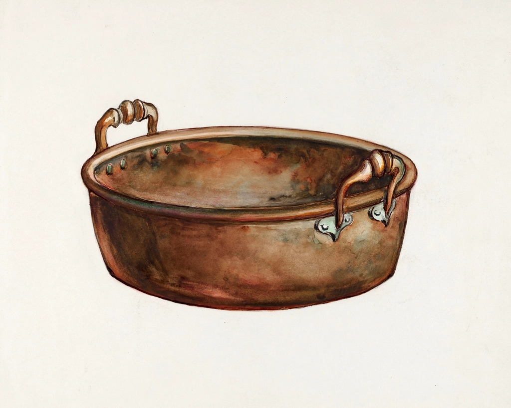
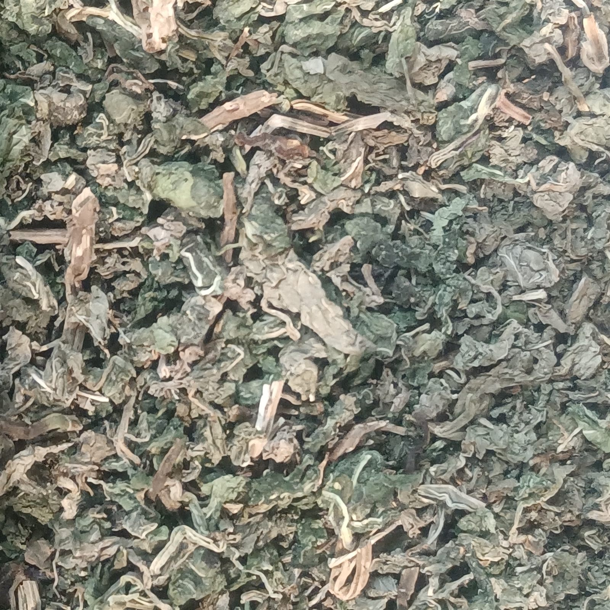

01 / アロマ（スプレー・オイル）
香りを持ち帰る
クロモジを蒸留して作るアロマスプレーとオイルです。枕元やお部屋でお使いいただいているお客様も多く、「眠る前にひと吹きすると、気持ちが落ち着く」といったお声をいただくことがあります。これはあくまで個人の感想であり、効果を保証するものではありませんが、日々の暮らしに香りをそっと添えたいという方に選ばれています。
¥X,XXX（価格は店舗にてご確認ください）
Story

富士山の麓には、クロモジというクスノキ科の植物が自生しています。noiでは、このクロモジを中心に、店の中で実際に蒸留を行い、できあがったものをそのまま店頭に並べています。蒸留の工程を間近で見られることも、このお店らしさのひとつです。
立ち上る香りには、柑橘のような爽やかさと、ほんのりとしたスパイスの気配があり、「落ち着く香り」と感じられる方が多いようです。ご来店いただいたお客様からは「ほぼ天然成分で、アルコールが使われていない」という感想もいただいており、素材そのものの香りを大切にした製法を続けています。
一瓶ごとに、富士山麓の森の時間をそのまま閉じ込めるように。noiの蒸留は、今日も静かに続いています。
Products
noiでは、自社で蒸留したクロモジを中心に、持ち帰っていただける香りと、店先で味わっていただける香りの、両方をご用意しています。
01 / アロマ（スプレー・オイル）
クロモジを蒸留して作るアロマスプレーとオイルです。枕元やお部屋でお使いいただいているお客様も多く、「眠る前にひと吹きすると、気持ちが落ち着く」といったお声をいただくことがあります。これはあくまで個人の感想であり、効果を保証するものではありませんが、日々の暮らしに香りをそっと添えたいという方に選ばれています。
¥X,XXX（価格は店舗にてご確認ください）
02 / ハーブティー
ハーブティーは、一杯ごとにしっかりと蒸らしてからお出ししています。香りが開くまでの時間を惜しまないことが、noiのお茶の味わい方です。スタッフが香りの特徴を一つひとつ説明してくれるので、ハーブに詳しくない方でも、自分に合う一杯を見つけやすいと好評です。

03 / クロモジドリンク・アイス
「クロモジミルクアイス」「有機抹茶アイス」「クロモジ梅ソーダ」など、クロモジの香りを味覚でも楽しめるメニューを揃えています。いずれも手作りで、一つひとつ丁寧に仕込まれているのが特徴です。富士山麓を歩いたあとや、山中湖周辺にお泊まりの際の立ち寄り先としても選ばれています。
¥X,XXX（価格は店舗にてご確認ください）
※メニュー内容・価格は季節により変更となる場合があります。

Interior
noiの店内は、古い建物の趣をそのまま活かしたつくりになっています。新しく整えられた空間とは違う、時間を重ねた木や建具の質感が、蒸留の香りとどこか馴染んでいるように感じられます。
接客にも、noiらしさがあります。スタッフが香りについて一つひとつ丁寧に説明してくれることや、植物の話で会話が広がることもあり、「香り好きの方にも、植物好きの方にも心地よい時間を過ごしていただける場所」として、多くの方に親しまれています。
Voices
「クロモジのアロマスプレーを枕元で使うようになってから、眠りの質が変わった気がします。スタッフの方も素敵で、また訪れたいお店です。」
ご来店いただいたお客様より
「店内で実際に蒸留してから店頭に並べていると知り、香りへの愛情を感じました。クロモジミルクアイスと有機抹茶アイスもとても美味しかったです。」
ご来店いただいたお客様より
「香りについて丁寧に説明してくれる、素敵なお店です。お茶もしっかり蒸らしてから出してくれるので、香りをゆっくり楽しめました。古い建物の趣を活かした内装も印象的でした。」
ご来店いただいたお客様より
Access
noiは、富士山麓の町・富士吉田市にあります。富士山の自然をすぐそばに感じられる立地で、山中湖方面にお泊まりの方が、散策の途中に立ち寄れる距離にあります。富士山麓を訪れた際のひと休みに、香りに包まれる時間をお過ごしください。
ご不明な点やお取り扱い商品についてのお問い合わせは、Instagramのダイレクトメッセージよりお気軽にご連絡ください。
Instagramはこちら